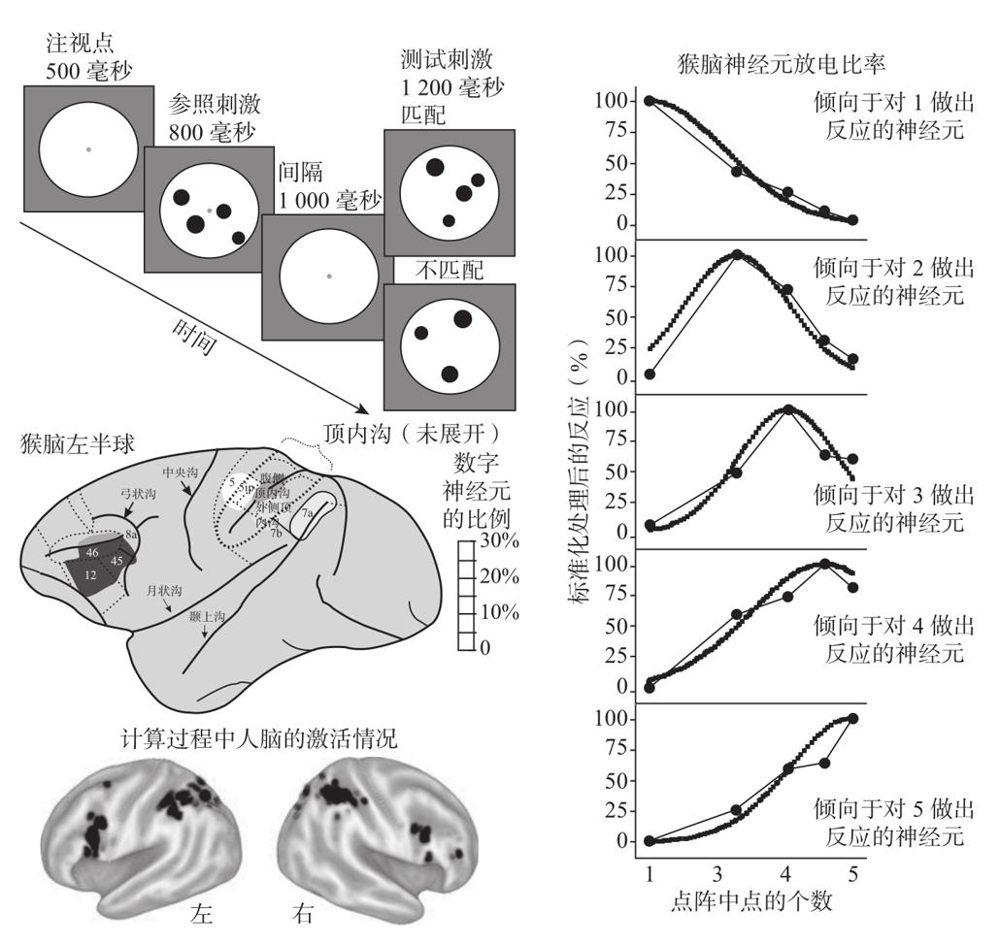
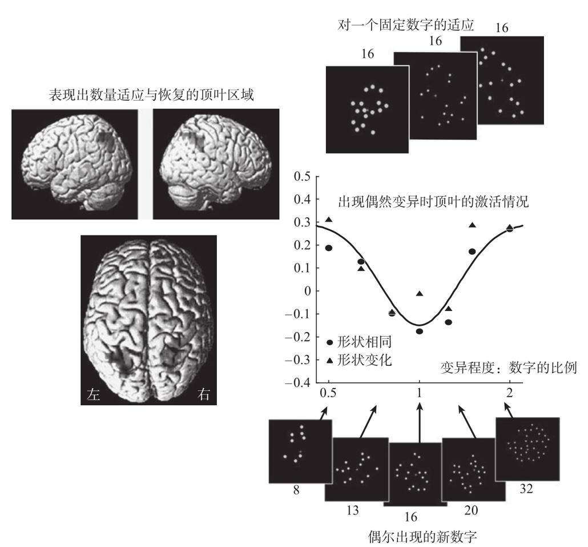

虽然涉及算术的脑区的知识非常重要，但它仅仅只是一个开端。脑成像技术还太过粗糙，还难以提供在单个神经元的层面数学如何进行编码的证据。神经元是大脑皮层的终极计算单位，因此，在能够一步步揭示这些出奇复杂的神经元如何对2小于3这样的算术事实进行编码之前，我们不能够宣称我们已经了解了算术的过程。
我在写本书第1版时，提出了一个很具体的模型：顶叶可能包含近乎一一对应于每一个输入数字的神经元，因此会有不同的神经元对2或3放电，为它们提供一个内部神经编码。当时，我强调的是这一提议的推测性。1970年理查德·汤普森发表在《科学》杂志上的论文是我们唯一的直接证据，他们在麻醉后的猫身上记录到了少量的神经元。其他动物物种（包括恒河猴）很明显关注到了它们环境中的数字，因此我的模型预测，这些动物体内必然装备有对应于数字的神经元，虽然目前还没有人观察到。这一领域似乎已经做好了深入研究的准备，当时我下结论说：“只有那些敢于运用现代神经元记录工具，继续探索动物算术的神经元基础的神经生物学家，才能最终找到答案。”
然而，即使是恒河猴的大脑皮层也包含了数十亿的神经元。为了有一线希望能够记录到与数字加工有关的神经元，电生理学家们至少要对电极放置的位置有一个大体的概念。我和同事们一向认为，人类的脑成像实验将在此发挥重要的作用。虽然人脑拥有一些额外的属性，但毕竟它仍是一种大型灵长类动物的大脑！因此，它的结构必将为动物研究提供一个有用的启示。我们以往的研究总是将位于顶叶深处的hIPS部位确定为与人类算术稳定相关的脑区。因此，很有可能这个在猴脑中同样存在的名叫顶内沟的脑沟，也负责猴子的数字加工。2002年，我们发表的一个脑成像研究把这个提案进一步细化30。我们展示了人类顶叶包含一个有关数字与空间能力的系统的几何地图。所有的大脑进行和数字关联的任务时，激活脑区总落在两个固定位置的中间。前面是我们抓取物品时激活的脑区，后面是负责眼动的脑区。最关键的是，类似的抓握和眼动脑区在比人脑小得多的猴脑中同样存在。猴脑顶内沟的前方只在猴子抓某一特定形状的物品时放电，而顶内沟后部的神经元则负责处理猴子想要把自己的眼睛关注和聚焦在哪里。实际上，我们并不确定猴子的这些脑区是不是人脑中这些脑区进化的前身。它们的同源性仍然存在着争论，部分原因是人脑似乎比猴子的大脑有更多这样的脑区。然而，如果我们假定存在同源性，那么我们的地图就暗示了猴脑中假定存在的数字神经元同样位于这两个位置的中间。根据这个推测，我们期待能够在猴脑顶内沟深处的腹侧顶内区（vertral intraparietal，简称为VIP）找到这些神经元。
我们首次提出以上假设的几个月后，这个特定区域确实被证明是一个非常重要的区域！两组相互独立的科研人员最终识别了我们预期的数字神经元31。虽然这些神经元在顶叶分布得相当广泛，但大部分位于人脑研究中所预期的精确位置：顶内沟的深处，即腹侧顶内区内或旁边。此外，我们在人脑更靠前的背外侧同样记录到了其他的数字神经元。然而这些神经元表现出微小的差异：它们的反应比顶叶的数字神经元更慢，在较后期的反应阶段，也就是猴子在工作记忆中保存数字的阶段，这些神经元的反应最强烈。实际上，每当我们必须用几秒的时间来记忆信息时，整个前额皮层都会被激活。因此目前，我们认为顶叶的神经元才是构成初级数字编码的特化单元，而这些位于前额皮层的、反应较慢的神经元仅仅是为了保持信息，以备后期回忆之需。
为了证明这些神经元确实用于编码数字，安德烈亚斯·尼德（Andreas Nieder）和厄尔·米勒（Earl Miller）随后在美国麻省理工学院用一个困难的数字任务训练猴子，这个训练要求猴子们能注意到数量等值（numerical equality）。每个实验中，实验者首先呈现一个黑屏，然后是一个由1～5个点构成的点阵，随后第二个点阵很快出现，猴子需要判断随后出现的点阵与之前的点阵中的点数是否一样多。在数字距离非常近时（如4和5），猴子能很好地完成这个“同-异”判断任务，因此我们可以确定，它们明白实验要求。此外，实验者通过改变实验材料的其他参数，如点的大小、颜色、排列等，证明猴子关注的确实是数量而非其他参数。猴子的行为显然与这些无关参数并无联系，而仅仅依赖于两个数字之间的距离。
这种行为一经确定无误，尼德和米勒就开始记录大脑的激活情况，并很快识别出一小部分这种神经元，它们的放电模式能够反映出当前所呈现的数字，这部分神经元约有20%位于顶叶（见图10-3）。每个神经元都对应着一个特定的输入数字。例如，第一组神经元在每次呈现一个目标时放电最强烈，而视野中出现更多数量的目标时，它们的放电会变弱。第二组神经元达到放电峰值时对应的数字是2。其他神经元对应的分别是数字3、4或5。尼德最近的研究已经找到了对数字二十几和三十几有所反应的神经元32。就像猴子本身一样，这些神经元关注的只是数字，它们的行为不会随视野中的其他细节的改变而改变。他们是名副其实的只对数字产生反应！

我们训练猴子记忆一个点阵中点的个数，然后判断它与另一组点阵中点的个数是否匹配。猴子的前额叶和顶内区域存在大量关注数字的神经元。右侧图展示了这些神经元的调谐曲线（tuning curve），这些曲线表明，每个神经元都对一个特定的数量产生最大限度的放电。
图10-3 猴脑中的数字神经元
资料来源：Nieder et al., 2003, 2004。
我在第1章中曾提到我和让-皮埃尔·尚热在1993年提出的一个理论模型，根据这个模型，我们对这些神经元的功能有着非常精确的预期。每个神经元不仅对某个特定数字有放电峰值，而且峰值数字的附近会形成一个倒U形的放电曲线，因此可以证明神经元是对一个数字的近似范围进行编码。此外，我们预期，在一个适当“压缩”的数轴（用数字术语来说，它应该是一个对数数轴）上绘制出这些放电曲线时，无论神经元所编码的数字大小，所有神经元的倒U形曲线的宽度应该是相同的。这个属性清楚地表明，这些神经元能够对它们所编码数字附近特定比例的数值进行反应：它们能对所编码数字前后30%范围之间的所有数字进行放电。令人惊讶的是，尼德的数据如此精确，因此我们能非常精确地检验这些数学预期，它们与我们的预期极其吻合。读者们自己在图10-3中也能够看出，例如，倾向于对4个点的点阵进行反应的神经元，同样会对3个或5个点进行放电，但是对单个点的放电要明显小很多。神经元的这种调谐曲线的特点能够很好地解释猴子（以及人类）对数值的混淆。正如第3章中提到的，我们往往会混淆4和5这样相似的数量表征。此外，随着数量变大，这种可能混淆的范围也会变大，可以说这种混淆在以平均值为中心的特定比例范围内具有不确定性。因此我们对4与5的混淆程度，和对40与50的混淆程度是一致的。猴子的神经元表现出相同的特性。
总的来说，数字神经元形成了数字的“分布式表征”（distributed representaion）或是“群编码”（population code）。每个数字并不是由少数精确的神经元进行编码的，而是由大量神经元进行近似编码，这些神经元的精确性随着数字的增加而减弱。尼德和米勒在恒河猴脑内确定出的神经编码恰好和我们在人类行为研究中预测的一致。近些年，我设计了一个能够建立神经元与行为之间联系的数学模型33。这个模型从两个假设入手：神经元能够编码数字，我们的决策取决于内部编码的最优推论。我的模型展示了如何对人类数值判断的特性进行细节上的重建。例如，当数字距离越来越近时，我们比较两个数字时的速度会逐渐变慢，并且正确率也会下降。我们可以通过数学方法在神经元的近似谐调曲线中推导出这种“距离效应”的精确形状。得益于这种构建起神经元和行为之间桥梁的规则，心理学变得越来越接近精确的科学。
在撰写该内容时，顶叶数字神经元如何产生数字调谐曲线的原理尚不明确。然而，美国杜克大学的迈克尔·普拉特（Michael Platt）及同事发现了编码数字的第二类神经元后34，这一问题有了很大的进展。他们在腹侧顶内区域正后方的一个叫作外侧顶内沟（LIP）的区域发现了这些神经元。这些神经元的反应与尼德和米勒发现的腹侧顶内区神经元存在以下几个方面的不同。第一点不同是，外侧顶内沟神经元没有对应于特定的数量。它们的放电率随着数字大小发生单调变化。其中一部分神经元的放电率随着视野内目标物数量的增加而急剧变大，而另一部分对大数字的放电率却逐步减弱，只在出现一个目标物时达到放电峰值。但是在这个区域，没有能够对中间数字产生峰值的神经元。第二点不同在于，这些外侧顶内沟神经元只能感受到有限范围内的视网膜图像，“感受野”（receptive fields）很小。它们并非对整个图像中的所有目标的个数发生反应，而只对某一特定视野内的数字进行反应。
为什么同一个大脑中会存在单调和调谐这两种完全不同的编码？其中一个可能的解释是，在加工调谐表征时需要单调神经元的参与。这个假设意味着，在对数字进行稳定的表征加工过程中，单调编码与调谐编码构成了两个不同的加工阶段。实际上这种两阶段加工模式非常符合让-皮埃尔·尚热和我提出的第一个数字神经元模型。我们的电脑模拟器的第一步，是神经元负责忽略目标物的身份与大小，对其位置进行编码。第二步，是在目标位置表征之上不断增加神经元的激活值，这种“累加神经元”（accumulation neurons）最终产生对近似数字的表征。第三步，是对激活值进行越来越大的阈值转换。我们最终获得了大量数量探测器，即对应于一个特定数量的神经元。近期的发现认为，在数量提取过程中的这两个相继出现的阶段可能对应于外侧顶内沟和腹侧顶内区的真正功能。对数字进行单调反应的累加神经元很好地对应于外侧顶内沟神经元，而对特定数字进行调谐的腹侧顶内区神经元则与我们假设的数字探测器完全吻合。此外，通过解剖学我们了解到，外侧顶内沟的神经元直接投射至腹侧顶内区神经元。最后，外侧顶内沟数字神经元对位置敏感，它们具有“感受野”，而腹侧顶内区数字神经元是对整个视野中的数量进行反应，这与它们从整个外侧顶内沟神经元阵列接收输入的假设是一致的。
总之，电生理学的记录为我们的理论模型提供了强大的支持。猴子显然是利用神经元群来编码数字的，它们很可能首先对物品所在位置的所有数量进行综合，然后对于综合出的总数使用特定的神经元进行编码。尽管这个理论看起来似乎合理，但证实其中的关键假设仍需要相当大的努力。现有数据的主要问题是，单调和调谐神经元两种数值编码类型，是由不同的实验室通过训练用于执行不同任务的不同猴子，在两个不同的脑区发现的。因此同一只动物身上是否确实同时存在这两种编码还有待观察。然而，有趣的是，在外侧顶内沟神经元上发现的单调数字编码拥有的属性，可以解释我在本章开始时提到的视觉错觉35，我们适应了一个特定数量之后，会错误地认为一个新的数字比它实际上更大或更小。比如外侧顶内沟神经元，它只能对视网膜上的一个特定位置产生适应。图10-1就展示了我们如何对出现在左右侧的数字产生不同的适应。此外，它能够在一个很大的数字范围之间进行延伸：对200个点的适应能够影响到我们对40个点的知觉。如果把这种适应仅仅归结于神经元对某些特定数量的调谐作用似乎不太可能，但是如果单调编码也同时参与其中的话，就能够讲得通了。因此，很有可能人脑除了调谐特定数字的神经元之外，同样拥有对数量单调编码的神经元。
我必须强调的是，这些结论都只是在猴脑和人脑之间存在同源性（homology）的前提下得到的。现实情况是，没有人在人脑中发现任何调谐数字的神经元，原因很容易理解，我们无法找到自愿在大脑中插入电极的志愿者！对人脑进行单神经元记录的机会非常少。一种情况是有患者癫痫发作。在这种情况下，神经学家有时需要通过在大脑深部植入电极来确定癫痫的位置。通过这种方法，有研究者记录到了非常漂亮的人脑神经元数据，有些只有在看到悉尼歌剧院美景或好莱坞明星哈莉·贝瑞（Hale Berry）时才会出现36！遗憾的是，癫痫大多数涉及颞叶的功能，对于数字神经元所在的顶叶并没有多少数据记录。因此，直到今天，我们仍未能识别出人类数字神经元。
在缺少直接记录的条件下，我们需要更多的创造性来解决这个问题。当然，能够识别我们所热衷的数字神经元的间接方法确实存在。虽然fMRI不能帮助我们直接观察到个别的神经元，但是它的信号能覆盖上千个细胞，因此在某种程度上，可以反映这些神经元的平均调谐。有一种方法能够考察重复出现同一项目时，功能磁共振信息如何随之变化37。我们已知在这样的条件下，神经元会产生习惯化（habituate）：它们的电位随着不断重复而减弱，就好像相同刺激无数次地出现会使它们感到厌倦。鉴于大多数的神经元都表现出这种适应性，它就成为一种用脑成像技术可以探测得到的宏观信号，我们能够真实地观察到该脑区的信号随着时间推移而变弱。然后我们可以检验在呈现一个新目标的情况下信号是否能够恢复。这种信号的恢复意味着这部分脑区包含能够辨别前后两个项目的神经元。
我和我的同事曼努埃拉·皮亚扎（Manuela Piazza）用适应范式进行数字实验，得到了非常漂亮的结果（见图10-4）。我们先向志愿者重复呈现相同的数字，然后让他们对这组数字产生适应。比如在其中一个实验中，他们能够不断看到16个圆点的组合，虽然它们在大小和排列上有变化，但是数量和形状总是相同。在特定的时间我们会引入一些异常的图片，这种图片可能是新的形状（三角形）或8到32之间的新数字。和我们预期的相同，顶内区域对新的数量发生反应。当新数字与旧数字之间的距离足够远时，它的激活情况会突然变得极其强烈（见图10-4）。

在脑成像过程中，被试重复接触相同数量的目标，导致大脑对这个数字激活的程度下降（适应）。当偶然引入新数字时，激活的恢复情况与新旧数字间的距离直接相关，因此产生了与猴子的数字神经元非常相似的调谐曲线。这些由于数字变化所产生的反应与物体的形状是否发生改变无关。
图10-4 人脑顶叶数字调谐的证据
资料来源：改编自Piazza et al., 2004。
这种数量反应在脑区中的位置和我们预期的完全一致：仅位于大脑两半球顶内沟的边缘。曲线也与该脑区若存在与猴子类似的数字神经元的表现完全吻合：顶叶脑区对重复出现的数字进行调谐，并在新数字出现时恢复，这一过程中产生的倒U形曲线与单个神经元的调谐曲线非常相似。此外，顶叶并非对所有形式的变异都会反应。当我们改变目标的形状时，这个脑区不会发生任何改变，但视觉和前额皮层的脑区会对此产生反应。因此，我们能够证明人类顶叶与猴子顶叶一样，只关注数字的变化而不关注形状的改变。因而，人脑中存在与我们的远亲恒河猴非常相似的、用于提取一组物品的数量的脑机制。